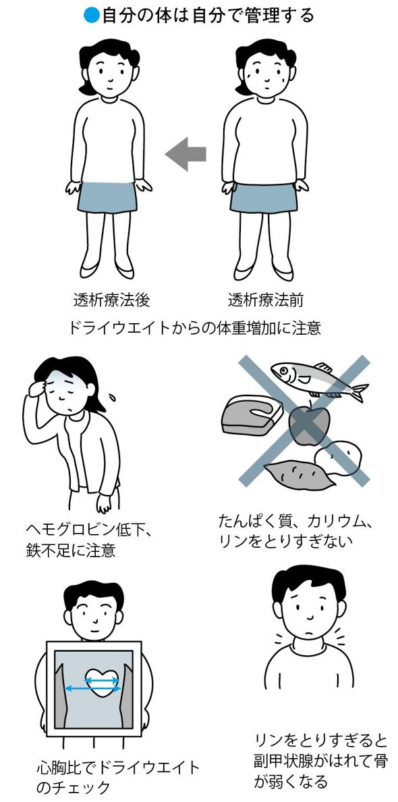

| 慢性腎臓病 (CKD) 進行させない治療と生活習慣 | |
| 原茂子 & 福島正樹 | |
| (2011) | |
この電子書籍は、縦組の底本を元に作成しました。
──慢性腎臓病を知って、病気を進行させないために
慢性腎臓病により腎臓の働きが低下して、透析療法を受けている方が年々増加しています。透析療法を受けている方は現在30万人。新たに透析療法が必要となる方は、２０１１年の全国調査の結果では１年間で約３万９０００人におよんでいます。その多くは、生活習慣病による糖尿病からの腎臓病、慢性糸球体腎炎や腎硬化症などの腎臓病の患者さんで、とくに高齢の方に増えています。
慢性腎臓病がどのような病気なのかは、本書で詳しく説明をしていきたいと思います。
腎臓は、沈黙の臓器といわれています。病気の自覚症状は乏しく、体がだるい、あるいは息切れがするという状態で受診したときには、すでに腎臓の働きが低下しており、自分の腎臓の代わりをする治療である透析療法が必要になっている患者さんは少なくありません。
また、病気が進行すると腎臓の働きが悪くなるとともに、狭心症や心筋梗塞、さらに脳卒中など、心血管疾患（心臓および血管系の病気）が見られることもあります。
健診時の検尿や血液検査で、たんぱく尿、クレアチニンといった項目について指摘を受けても、とくに具合は悪くないという理由から、そのまま放置している方もいらっしゃるのではないでしょうか。腎臓の病気は、早期発見と早期治療が本当に重要なのです。
30年以上にわたって腎臓の病気の患者さんの診療にかかわってきた二人の腎臓専門医が、「おひとりでも多くの方が慢性腎臓病にならないように」「進行しないように」「透析療法にならないように」と願いを込めて、本書をしたためました。
「慢性腎臓病とは何か？」「慢性腎臓病といわれる腎臓の病気には、どのような病気があるのか？」「慢性腎臓病にならないようにするには、どうしたらよいのか？」といったことからお話ししていきたいと思います。
現在行われている治療（お薬や食事療法）に関して、慢性腎臓病の日々の診療のなかで気づいた、私たち医師が患者さんに伝えておきたいポイントなども述べています。透析療法を必要としている方のために、透析療法や腎移植についても触れています。
専門的なお話も入れておりますので、医学用語でわかりにくい部分もあるかもしれませんが、できるだけ平易な言葉でわかりやすく説明するように心がけました。
慢性腎臓病と仲良くおつき合いし、ご自分の腎臓を大切にしていただけるように、また慢性腎臓病の患者さんがいらっしゃるご家族の方にも、日々の生活のなかで、本書がお役に立てればうれしい限りです。
平成23年２月
原 茂子
福島正樹
編集協力 株式会社ウェルビ
本文デザイン 株式会社明昌堂
カバーデザイン 上筋英彌（アップライン）
ＣＫＤという言葉を耳にされたことはありますか？ ＣＫＤとは、慢性の腎臓の病気を意味する英語「Chronic Kidney Disease」の略で、日本語では「慢性腎臓病」と訳されています。一般にはあまり聞き慣れないかもしれませんが、アメリカで言われはじめて、日本だけでなく全世界的に注目されています。毎年３月第２木曜日には、世界腎臓デーとして、慢性腎臓病をなくすためのキャンペーンが世界中で行われています。
慢性腎臓病とは、一つの病名ではなく、腎臓の働きが慢性的に低下していくさまざまな腎臓病をまとめて表します。
腎臓病というと顔や足のむくみ（浮腫）などをイメージする人も多いと思いますが、腎臓は沈黙の臓器ともいわれ、初期の段階ではほとんど自覚症状が見られません。体調の不良に気づいて初めて病院を訪れたときには、すでに病気が進行していて、末期腎不全（高度に腎臓の働きが低下して、もはや食事療法や薬物療法では治療できない状態）のために、自分の腎臓の代わりをしてくれる腎代替療法の「透析療法」や「腎移植」をしなければ命を保てなくなっている場合も珍しくないのです。
このような、末期腎不全の人が日本だけではなく、全世界的に増加し、問題となっています。そこで、腎臓の病気の発病を予防するとともに、重症にならないように、早期発見と早期治療を目的として、この慢性腎臓病（ＣＫＤ）という言葉が使われるようになったのです。
ＣＫＤという言葉にはなじみのない人も多いと思われますので、本書では、「慢性腎臓病」と表記して、「発病の予防はどうすればよいのか？」「慢性腎臓病をこれ以上悪くしないで、透析療法に入らないようにするためにはどうすればよいのか？」についてお話をすすめていきます。また、透析療法や腎移植などについても説明しましょう。
世界的に見ると、末期腎不全の患者さんは、１９９０年から２０１０年までの20年間でおよそ43万人から２１０万人へと、約５倍にも増えています。
日本ではどうでしょうか？ 日本では末期腎不全になると、ほとんどの人が透析療法を受けることになります。透析療法を受けている人の数を見てみましょう。
日本は、人口当たりの透析患者数が世界で２番目に多い国です。２０１１年末の全国調査では、透析療法を受けている患者さんの数は30万人におよんでいます（図１）。これは国民の約４４０人に１人にあたり、しかも新たに透析療法をはじめる患者さんは、２０１１年末の全国調査で、１年間に約３万９０００人にもおよんでいます。皆さまの周りにも、透析療法を受けている人が少なからずいらっしゃるのではないでしょうか。
透析療法には、高額な医療費がかかります。その額は１人あたり年間およそ５００万円にもおよびますが、患者さんへの補助として国から支払われており、社会的に大きな問題となっています。透析療法を受けるようになると、個人の生活や仕事も制約されます。現在、多くの人が受けている通院で行う「血液透析」では、１週間に３回、１回に４～５時間かけて、ベッドに寝て治療を受けなければなりません。時間の制約だけではなく、心血管疾患（狭心症、心筋梗塞、心不全、脳卒中など心臓と全身の血管系の病気）の合併も見られるようになります。
透析予備群ともいえる慢性腎臓病患者さんは、日本では１３３０万人、人口の約13％であり、成人の８人に１人にあたります（「ＣＫＤ診療ガイド２０１２」より）。慢性腎臓病を予防するとともに、慢性腎臓病から透析療法にならないための対策が極めて重要になっています。
腎臓は背中側の腰より上に位置していて、左右に１つずつあります。図１─１に示されているように、おなかと背中の間にあり、右の腎臓のほうが左の腎臓よりやや低い位置にあります。そら豆のような形をしており、大きさは人の握り拳より少し大きい程度で、１つの重さは１２０ｇほどです。
腎臓は、ネフロンと呼ばれる単位から構成されています。ネフロンは１つの腎臓に１００万個あり、それぞれが糸球体という毛細血管（最も細い血管）の塊と、それを包むボウマン嚢という袋、それに繋がる尿細管という細い管で構成されています（図１─２）。
小さいけれど、最も血液がたくさん流れている臓器です。心臓から送り出される血液量のおよそ４分の１が腎臓に流れ込みます。腎臓に流れ込む血液量は１分間に約１ℓで、大量の血液が糸球体で濾過され、１日に約１５０ℓの濾過液（原尿といいます）がつくられ、老廃物や余分な電解質が含まれます。腎臓は、原尿が糸球体から尿細管といわれる部分に流れる間に、再吸収と分泌を繰り返して必要な物質を体の中に取り込みます。
最終的に、約１・５ℓの尿となって膀胱にたくわえられて尿として出ます。このようなことから、腎臓は比較的小さな臓器ですが、人の体を常に健康に保つための重要な役割を担っているのです。
腎臓の働き
①尿をつくること
腎臓のおもな働きは尿をつくることですが、では、尿はどのようにつくられているのでしょうか？
腎臓に流れ込んだ血液は、糸球体を通る間に水分と老廃物が濾過されて、原尿ができます（図１─３）。
原尿の中には、尿素窒素やクレアチニン、尿酸といった不要な老廃物と、水分、糖分、ナトリウム、アミノ酸などの体に有益な物質が含まれています。
原尿が、ボウマン嚢を通過して、尿細管（近位尿細管から遠位尿細管）の中を流れている間に、水分や糖分、アミノ酸など体に必要な物質は、99％が吸収されて血液中に戻ります（図１─４）。
その残りは、私たちの体内で不要となった尿素、クレアチニンや尿酸といった老廃物や電解質で、尿となります。この尿は、腎臓の中心部にある腎盂にたくわえられた後、尿管を通って膀胱へ流れ、最後は尿道を通ります（図１─１）。腎臓では、このような実に巧妙な作業が行われているのです。
なぜ、いったん捨ててしまったものを、再び吸収するのでしょうか？ これは、遠い昔、動物の祖先が海に住んでいたことと密接に関係しています。人間の細胞の中は、生命が誕生した頃の海水の成分と非常に似た状態と考えられています。体の（酸とアルカリの程度）、浸透圧、電解質の量など、細胞内のバランスを一定に保つために、腎臓は、糸球体で血液から水分といっしょに老廃物などをまとめていったん濾し出し、その中から体に必要なものを再吸収しているのです。
腎臓の中心的な役割を果たしている糸球体が傷害されると、たんぱく質や赤血球が尿の中に出てきます。このときに尿検査をすると、腎臓病のサインであるたんぱく尿や血尿が認められます。また、老廃物を排泄できなくなり、血液中の尿素窒素やクレアチニンの値が正常の値より高くなります。
②体内の水分量・電解質を調節する
私たちが毎日、食事や飲み物でとる塩分や水分量は日によって違います。お煎餅など塩辛いものをたくさん食べる日もあれば、暑くて水分ばかりとってしまう日もあります。それでも体内の水分量や血液の電解質（ナトリウムなど）の濃度はほぼ一定に保たれています。これは、腎臓が体内の水分や電解質を調節しているからです。
電解質の調節は、血液のにもかかわっています。人間の血液は、７・４と弱アルカリ性に保たれています。この弱アルカリ性の血液は、私たちが健康を保つうえで、とても大切なものです。
血液のを一定にするために大きな働きをしているのは腎臓です。尿細管で、体に必要な電解質を選択して再吸収し、血液が弱アルカリ性になるように調節しています。腎臓の働きの低下が進むと血液のが保たれなくなって、血液は酸性側になり、細胞に悪影響をおよぼして、体がうまく機能しなくなります。
③骨をつくるのに必要なビタミンＤを活性化する
ビタミンＤは骨をつくるために必要な栄養素で、魚肉やキノコ類などさまざまな食品に含まれています。
ところが、ビタミンＤはそのままの状態では機能することができません。体内で活性型ビタミンＤに変化することによって、はじめて骨を丈夫にすることができるのです。
活性型のビタミンＤに変化させるのは、腎臓の働きのひとつです。食品などからとり入れたビタミンＤは、腸から吸収されると肝臓と腎臓で活性型ビタミンＤに変化します。
活性型ビタミンＤは、血液中のカルシウム（Ca）とリン（Ｐ）濃度を調節しています。腎臓の働きが悪くなると、ビタミンＤの活性化がうまくできなくなり、腸からのカルシウムの吸収が減少して骨がつくられなくなります。
④造血ホルモンを分泌する
腎臓では、「エリスロポエチン」という造血ホルモンがつくられています。おもな役目は、骨髄に働きかけて赤血球がつくられることを調節しています。
赤血球は肺で受け取った酸素を、体のすみずみまで運ぶ働きをしていますが、腎臓の働きが低下してエリスロポエチンの分泌が少なくなると、赤血球がつくられなくなり貧血が起こります。
このように、腎臓の働きが低下して起こる貧血のことを「腎性貧血」と呼んでいます。貧血になると息切れや動悸が現れ、さらに進むと、心臓の働きが悪くなったり腎臓の働きが低下したりします。
⑤血圧を調節する
塩分を多くとりすぎると高血圧を合併しやすくなりますが、腎臓は余分な塩分と水分を排出し、血液の水分量を一定に保つことで、血圧の調節を助けるという大切な役割も担っています。
また腎臓は、血圧を上昇させる「レニン」という酵素（ホルモン）をつくり、分泌しています。レニンは、体内にできる「アンジオテンシン」という血圧を上昇させるホルモンを調整しています。腎臓の働きが低下してくると、塩分と水分が排出できなくなって血液量が増え、また血圧を上げるホルモンの分泌が亢進して、高血圧をきたすようになります。
レニンやアンジオテンシンなど、血圧を上昇させるこれら一連のホルモンは、「レニン・アンジオテンシン系」と呼ばれていて、これらのホルモンは、腎臓の糸球体で行われる濾過にかかわる血管内の圧力を調節しています。したがって、腎臓の働きが悪くなる仕組みには、レニン・アンジオテンシン系の亢進が影響しているといわれています。
慢性腎臓病が増えていることはすでに、序章でお話ししましたが、慢性腎臓病は、腎臓の働きが低下するだけではなく、心血管疾患に関連することもわかってきました。心血管疾患を引き起こすメタボリック症候群は、内臓脂肪型の肥満に加えて、さらに高血糖、高血圧、脂質代謝異常のうち２つ以上を併せ持った状態のことをいいます（図２─１）。これらの因子が多いほど、心血管疾患の危険性が高まり、同時に腎の働きの低下を促進させます。慢性腎臓病は、メタボリック症候群と深くかかわっているのです。
慢性腎臓病の初期には、ほとんど自覚症状がありません。次にあげるような人は、慢性腎臓病になりやすい人（慢性腎臓病ハイリスク群）で（表２─１）、とくに早期発見が大切です。健診の機会を逃さないようにしましょう。
⑴ 高血圧、糖尿病、肥満、メタボリック症候群がある
これらは慢性腎臓病の危険因子（発病の危険性を高める要因）です。生活習慣に注意しましょう。
⑵ 高齢の人
加齢にともない腎臓の働きが低下し、また高血圧や糖尿病、肥満になる可能性が高くなります。これらは慢性腎臓病を発病させる危険性が高い病気です。予防するためには、良い生活習慣を維持することが大切です。
⑶ 近親に慢性腎臓病の人がいる
多発性嚢胞腎（第４章の腎臓の病気・多発性嚢胞腎 参照）やアルポート症候群（難聴をともなうことが多く、進行性に悪化する遺伝性腎炎）は遺伝性の腎臓病です。検査を受ける機会をつくりましょう。
⑷ 膠原病や尿路感染症、尿路結石などの病気を持っている
これらの病気に対する治療を受けて、慢性腎臓病にならないようにすることが大切です。
⑸ 以前に腎臓病にかかったことがある
たんぱく尿などを指摘されたことがある
過去に急性糸球体腎炎（第３章検査と診断・自覚症状はどんなもの？参照）などの腎臓病にかかったことがある人です。一般的には急性糸球体腎炎は治癒する病気とされていますが、尿の異常がなくても、腎臓にまだ病気が残っていることが多いのです。慢性糸球体腎炎に移行する場合もあります。
⑹ 薬を常用している
痛み止めや炎症を抑える薬剤などを常用している人も、薬の副作用で慢性腎臓病になる場合があります。腎臓に関する検査を受けることをおすすめします。
慢性腎臓病は、初期の段階では無症状ですが、腎臓の働きが低下するとともに、むくみや息切れなどの症状が見られるようになります。さらには腎臓と関連した症状だけではなく、心血管疾患も合併してきます。とくに狭心症や心筋梗塞、心不全などの心臓の病気と慢性腎臓病が一体化して進行することから、心腎連関といわれています（図２─２）。心臓血管の病気は、慢性腎臓病における死亡の大きな原因です。慢性腎臓病では、たんぱく尿が多く、また、腎機能が低下するほど、末期腎不全や合併した心血管疾患が進行します。
慢性腎臓病で、透析療法が必要となるころには、心筋梗塞の原因となる心臓の動脈硬化の合併が約60％の人に見られ、糖尿病性腎症では約80％、糖尿病でない慢性腎臓病の人では約40％に見られると報告されています。腎臓の働きが低下しないように、早期発見、早期治療が大切です。
慢性腎臓病の治療で最も重要なのは、生活習慣の改善と病気の進行を抑えることです。慢性腎臓病の発症にかかわる因子である、高血圧、肥満、脂質代謝異常、高尿酸血症、喫煙に対して、生活習慣の改善をはかるとともに、慢性腎臓病の進行の程度に合わせた治療（薬と食事療法）で進行を少しでも遅らせ、透析療法を回避することが大切です。
もし、検査で異常を指摘されたら、自覚症状がないからといってそのまま放置せず、医療機関を受診しましょう。
日本では、小児から高齢にいたるまで、検尿が行われています。検尿を受けることは、慢性腎臓病を発見するとても重要な機会です。
検尿では、採取する方法によって、「随時尿（いつでも好きなときに尿を採る）」「早朝尿（起床後、すぐに出る尿）」「24時間の蓄尿（24時間に出る尿を全部ためる）」などがあります。
一般的な検尿は、病院の外来や健診のときなど随時に採取した尿で、検査用の試験紙をつけて、尿に含まれている成分を調べます。たんぱく尿、尿潜血（血尿の有無）、尿糖、白血球（尿路に細菌感染がある場合に検出されます）の有無などもわかります。
24時間の蓄尿の検査では、１日に出ている「たんぱく尿」の量、１日の塩分摂取量、たんぱく摂取量などがわかります。治療効果を判断したり、食事療法がうまくできているかなどのチェックに有用です。
ここでは、検尿でわかる項目について説明します。
たんぱく尿
たんぱく尿とは、尿の中に一定量以上のたんぱくが出ている状態をいいます。検査の結果は、「」「±」「1+」「2+」「3+」「4+」で表されます。、±は病的な意味はあまりありません。2+以上は腎臓専門医を受診することが必要です。
たんぱく尿は、健康な人でも１日１５０mg程度は排出されます。風邪を引いたときや発熱、激しいスポーツの後などでは、一時的に多く出ることがあります。
水分摂取ができなかった場合には濃い尿が出ますが、そのようなときには1+になることがあります。1+以上が続く場合やたんぱく尿と血尿（後出参照）が、ともに1+以上であれば、さらに詳しい検査（尿たんぱくの定量）が必要です。
たんぱく尿が多いほど腎臓の働きが低下し、末期腎不全になりやすいという報告があります（図３─１）。早期からたんぱく尿を減らすような治療を始めれば、進行を抑えることができます。
微量アルブミン尿
糖尿病の合併症である「糖尿病性腎症」が疑われる場合に、早期の段階で診断に用いられる検査です。尿中にごくわずかに出るアルブミン（微量アルブミン尿）は、通常の試験紙法による検尿では見つけることができませんが、微量アルブミン尿の検査は、早期の糖尿病性腎症を確実に発見します。
微量アルブミン尿が見つかるのは、糖尿病性腎症の第２期、「早期腎症」と呼ばれる時期です。このときに積極的に糖尿病を治療すれば、微量アルブミン尿が減少あるいは消失して、糖尿病性腎症の治る確率は高くなります。
この検査は、早朝尿や24時間の蓄尿で行います。微量アルブミン尿の検査では、同時に尿中クレアチニンを測定し、アルブミンとの比率（アルブミン指数）で表されます（表３─１）。
微量アルブミン尿は高血圧、妊娠中や運動後に検出される場合もあります。
特殊なたんぱく
極めてまれですが、検尿で試験紙法によるたんぱく尿が陰性「」でも、たんぱくの量を測る（定量する）と検出されるたんぱく物質があります。「ベンスジョーンズたんぱく」というたんぱくで、骨髄腫に合併した腎臓病の場合に見られます。
血尿
尿に血液（赤血球）が混じっていることを「血尿」（表３─１）といいます。試験紙法（図３─２）による検査では潜血の程度により、「」「±」「1+」「2+」「3+」と表現されます。
目で見える血尿（コカコーラ色のように見える）を「肉眼的血尿」、目では見えないけれども、尿を顕微鏡で見た場合に血尿（赤血球）が見られる場合を「顕微鏡的血尿」といいます。
採取した尿の沈殿物を顕微鏡で見た場合、尿沈渣では、赤血球や白血球、円柱（細胞成分やたんぱく質からなる円柱の形をした物質）、細菌などがあるかどうかがわかります（図３─２）。腎臓に病変があると、赤血球、円柱などが多く見られます。
尿沈渣で見られる赤血球の形によって、変形のある場合は、糸球体から出ている血尿であり、変形がない場合には尿管や膀胱から出ている血尿と判断されます。
赤血球の判定では、１視野（通常、４００倍の顕微鏡で見える視野）で１個未満、１～５個、５～10個、10～30個、多数、と表されます。
高齢者の血尿では、膀胱の病気など泌尿器科の病気の可能性があるので注意が必要です。
白血球、細菌
尿路感染症（膀胱炎や腎盂腎炎など）では、尿の中に白血球が増加し、細菌が混じっています。白血球の判定では、１視野で１個未満、１～５個、５～10個、10～30個、多数、と表されます。
悪性腫瘍細胞
膀胱や尿路にがんがあると、腫瘍細胞が見られます。
クレアチニン
慢性腎臓病の診断に重要な血液検査は、血液中のクレアチニン（血清クレアチニン）値です。
クレアチニンは筋肉でつくられる老廃物の一種で、腎臓で濾過されて尿中に排出されます。糸球体が傷害されると、糸球体濾過量が低下して尿中にクレアチニンが排出されにくくなります。そのため血清クレアチニンが基準値より高くなります。なお、尿中に排出されるクレアチニンの量は原則として一定です。
血液中のクレアチニンを測ることで腎臓の働きがどの程度悪いかがわかりますが、腎臓の働きは血液中のクレアチニン値と比べると差があります（図３─３）。腎臓の働きが半分以下に低下したとき、はじめてクレアチニン値が正常値より高くなります。クレアチニンの値を測定することは重要です。
クレアチニンの測定は、従来の住民健診では含まれていましたが、２００８年から始まった特定検診（メタボ健診）では、クレアチニンの測定が入っていません。日本腎臓学会では、慢性腎臓病の診断に必須であるクレアチニンの検査がきわめて重要であることから、検査項目として認められるようになることを、厚生労働省に要請しています。
尿素窒素
尿素窒素は、食事で摂取したたんぱく質の老廃物です。腎臓の働きが低下すると、尿素窒素の数値も高くなります。たんぱく質を制限していると尿素窒素の値は低くなり、高たんぱく食では尿素窒素の値が高くなります。尿素窒素の値をクレアチニンの値で割った数値が10未満の場合には、たんぱく質制限の食事療法が守られていることがわかります。クレアチニンと尿素窒素の基準値を表３─２に示します。
腎臓の働きを見る検査は、おもに３種類あります。
推算糸球体濾過量（ｅＧＦＲ）
慢性腎臓病を診断するために、糸球体濾過量を推算する計算式を提示します。これは糸球体でどれくらい血液が濾過されているかを示すもので、クレアチニンの値、年齢と性別から求められます。しかし、この計算式を使用することは非常に困難なので、血清クレアチニン値、年齢、性別で見る早見表を使います（本章の最後を参照）。
クレアチニンクリアランス
クリアランスとは、デパートでのクリアランスセールのように、「一掃」という意味で、腎臓が１分間にどれだけの量の血液から、クレアチニンを排除しているかを表します。24時間の蓄尿検査で簡単に行うことができるために、広く用いられています。
イヌリンクリアランス
「イヌリン」という物質を用いて測定する「イヌリンクリアランス」の腎機能検査は、正確な糸球体濾過量を表しますが、検査が複雑で、日常の検査では実施されていません。
その他の血液検査
腎臓の働きの低下にともない、その他の検査で異常が見られます。
①尿酸
プリン体（細胞の新陳代謝でできる物質）の代謝産物です。腎臓の働きが低下すると、高い値になります。動脈硬化、高血圧、肥満との関連も見られています。腎臓の働きを悪くする因子のひとつでもあります。
②ナトリウム（Na）、カリウム（Ｋ）、クロール（Cl）
電解質です。腎臓の働きが悪くなるとカリウムが高い値になります。
③カルシウム（Ca）
骨の代謝に関係しています。腎臓の働きが悪くなると、ビタミンＤが活性化されなくなり、腸管からのカルシウムの吸収が悪くなるので、数値が低くなります。
④リン（Ｐ）
腎臓の働きが悪くなると、腎臓からリンが排泄できなくなり、リンの値が高くなります。
⑤ヘモグロビン（Hb）、ヘマトクリット（Ht）
腎臓の働きが低下すると、貧血が見られるようになります。貧血があるか、またその程度がわかります。
⑥血液の（体液のバランス）
腎臓の働きが低下すると、腎臓から酸の排泄ができなくなるために酸がたまり、血液が酸性になります。
⑦副甲状腺ホルモン
カルシウム、リンの代謝にかかわっているホルモンです。腎臓の働きが低下すると、値が高くなります。
腎臓の大きさや形の異常、結石や腫瘍の有無を調べるために行われます。
画像検査のおもなものには、「ＣＴ検査」「超音波（エコー）検査」「ＭＲＩ検査」「アイソトープによる核医学検査」などがあります。
腎臓の形の異常
腎臓そのものの形に異常があり、慢性腎臓病に進行する場合があります。
腎臓が１つしかない、腎臓の奇形、多発性囊胞腎（第４章の腎臓の病気・多発性囊胞腎 参照）などが画像検査でわかります。腎臓が１つしかない場合や腎臓の奇形では、残っている腎臓に負担がかかって腎臓の働きが低下することがあり、また尿路感染症を合併しやすくなることもあります。
腎血管造影法
造影剤を血管に注入して、レントゲンで腎臓の動脈（腎動脈）を調べます。腎動脈が狭くなって起こる腎血管性高血圧や腎腫瘍などの診断に用います。
アイソトープを用いて行う検査
アイソトープ（放射線同位元素）という検査用の薬を腕の静脈に注射をして、左右の腎臓の働きを別々に見ることができます。
検尿や血液検査で腎臓に傷害があると判断された場合、正確な診断をするため、また、今後どのような薬で治療するかなど方針を決めるために、腎生検という検査が必要な場合があります。腎臓の一部を採取して、顕微鏡で腎臓の状態を詳しく調べます。検査のために１週間くらいの入院が必要になります。
検査のときには、うつ伏せになり、局所麻酔の注射を受けます。超音波（エコー）で腎臓の位置が確認されて、安全な部位に挿入された生検針で、組織の一部が採取されます。穿刺した場所からの出血を抑えるために背中を押さえて圧迫止血が行われ、その後は絶対安静が必要になります。
腎生検は腎臓病の状態を正しく知るためには大切な検査です。腎臓を針で穿刺するため、穿刺後に目で見える血尿が出たり、腎臓の周囲への出血、痛みなどの合併症をともなうこともまれにありますが、一般的には安静と出血を抑える薬で対応されます。
なおこの検査は、末期腎不全で腎臓が小さくなって萎縮している場合には禁忌（患者さんの状態によって手術や検査などを行わないほうがよいと考えられること）です。
腎生検は、腎臓病にかかったすべての患者さんが受けなければならない検査ではありませんが、診断を明らかにするとともに、どのような治療が必要であるかを決めるためには必要です。危険性を含めて腎生検の必要性を医師と十分に相談されることをおすすめします。
３ヵ月以上「たんぱく尿」、または「血尿」が持続して陽性である場合や、「推算糸球体濾過量（ｅＧＦＲ）」で表される腎臓の働きが基準よりも低下している場合（60㎖／分／１・73㎡未満）は慢性腎臓病です。推算糸球体濾過量（ｅＧＦＲ）とは、血液中のクレアチニンの値と年齢、性別をもとに腎臓の働きの程度を知るための指標のことです。さらに、この数値から、慢性腎臓病が進行しているかどうかをステージＧ１～Ｇ５に分けて診断します（表３─３）。
ステージが進んでいるほど、たんぱく尿が多いほど、進行ははやまります。同じように、慣性腎臓病の原因が糖尿病などの生活習慣病である場合も、進行がはやまります。また、心血管疾患の合併も高頻度にみられます。
各ステージ（病期）の症状、検査
ステージＧ１では、推算糸球体濾過量（ｅＧＦＲ）から見た腎臓の働きは正常で、自覚症状は見られません。慢性腎臓病になりやすい因子を持っている人（第２章の慢性腎臓病になりやすい人 参照）では、適正な生活上の管理をすることが大切です。
ステージＧ２では、腎臓の働きが低下しはじめている段階で、生活習慣病やどのような腎臓の病気を持っているかなどの検査が必要です。
ステージＧ１、Ｇ２までは、原因となった腎臓病の治療、生活習慣の改善や血圧管理、肥満の改善などで、慢性腎臓病の進行を停止もしくは治すことも可能です。
ステージＧ３ａ、Ｇ３ｂ以降は、腎臓専門医の定期受診が必要となります。腎臓の働きの低下のほかに、心血管疾患の合併がないかどうかを調べることが必要です。Ｇ３ｂではＧ３ａに比べて、心血管疾患の合併が多くなります。さらに、腎性貧血やカルシウム、リンなどのバランスの崩れの程度も強くなります。
ステージＧが４、５ではそれらの症状が進行します。透析療法に対しての準備が必要な時期です。
慢性腎臓病は自覚症状が乏しいのですが、自覚症状が出たときには、すでに腎臓の働きが高度に低下している場合もあります。ここでは、どのような症状があるか説明しましょう。
尿の症状
①血尿
自覚症状として見られる血尿は肉眼的血尿です。このような場合には、次のことが考えられます。
急性糸球体腎炎
扁桃炎などの上気道炎の症状が出た後、２週間くらいで肉眼的血尿が見られます。その他の自覚症状としては、顔や足にむくみが現れたり、血圧が高くなったりします。急性糸球体腎炎は、一般的には治癒する腎炎です。急性糸球体腎炎が発病後１年以上治癒しない場合は、慢性糸球体腎炎と診断されます。
慢性糸球体腎炎の急性増悪
IgＡ腎症（第４章の腎臓の病気・慢性糸球体腎炎 参照）では、風邪の症状が出た１～２日後に肉眼的血尿が見られます。
尿路結石
腰背部の痛み、あるいは下腹部の痛みとともに、血尿が見られます。
膀胱腫瘍など尿路系の悪性腫瘍
痛みがなく、血尿が続きます。
②尿の泡立ち
尿が泡立つことは健康な人でもあることですが、通常はしばらくすると消えてしまいます。ところが、これがなかなか消えない場合、尿中にたんぱく質が含まれていることが考えられ、腎臓の病気が疑われます。一時的なものであれば、それほど心配する必要はありません。
③頻尿・夜間尿
何度もトイレに行きたくなる頻尿という症状は、膀胱炎にかかったときなどにもよく見られます。夜間尿は腎臓病にもよくある症状です。これは腎臓の尿を濃くする力（尿濃縮力）が低下している場合に見られます。
頻尿は病状としては最も気づきやすいものですが、腎臓病とは限らず、前立腺肥大症や、間質性膀胱炎など他の病気の可能性があります。長く続くようであれば、一度、腎臓内科か泌尿器科で検査を受けるようにしてください。
尿以外の症状
①むくみ
朝起きたら顔がむくんでいた、というのは前日に水分をとり過ぎたときなどによくあることです。しかし、むくみがなかなか解消しない場合は、さまざまな内臓の病気が考えられます。腎臓の働きが低下した場合も、水分の調節がうまくいかないため、むくみが見られます。
たとえば、ネフローゼ症候群（高度なたんぱく尿が見られる腎臓病）では、全身にむくみが現れます。これは、１日３・５ｇ以上の多量のたんぱく質が尿に出るため、血液中のたんぱく質が減少すること（血清アルブミン値が３・０ｇ／㎗以下）で起こる症状です。
②高血圧
高血圧と腎臓はとても密接な関係にあり、高血圧が続くと腎臓の働きが低下します。また、腎臓の働きが悪くなると高血圧が見られるようになります。高血圧のために過剰な濾過がかかり、糸球体が壊れていくため、さらに腎臓の働きが悪くなります。高血圧は腎臓以外にも、動脈硬化（心臓や脳、下肢の血管の病気）の原因になります。高血圧症の患者さんの約３割が、腎臓に病気を抱えていると報告されています。
一方、腎炎などで糸球体の毛細血管が壊れて濾過機能が低下すると、糸球体の近くにある傍系球体装置といわれる部分からレニンという昇圧ホルモン（第１章参照）が分泌され、高血圧の原因になります。このように腎臓病と高血圧は悪循環を作り出すのです。
末期腎不全でみられる症状
ステージＧ４～Ｇ５に進行して末期腎不全になると、貧血、動悸や息切れ、さらに、むくみが強くなります。尿毒症の症状として吐き気、食欲低下などの消化器症状も現れるようになります。
この章では、慢性腎臓病の背景にある因子、とくに、「生活習慣病とのかかわり」と「腎臓の病気」について解説します。
慢性腎臓病の背景にある因子や、悪化させる因子には、高血圧、脂質代謝異常、高血糖、肥満、高尿酸血症などがあげられます。これらは、生活習慣病やメタボリック症候群を構成しています。メタボリック症候群やその予備群の方は、早期発見・早期治療によって慢性腎臓病の発症を予防しましょう。
本章では、生活習慣病とそれぞれの腎臓病について説明していきます。
内臓脂肪型肥満
肥満は、内臓につくタイプの内臓脂肪型肥満と、皮下につくタイプの皮下脂肪型肥満に分けられます。内臓脂肪が多くなるにつれて、高血圧、糖尿病、脂質代謝異常などが増加します。これらの因子が腎臓の働きを低下させます。
高血圧
高血圧は、腎臓の働きを低下させる大きな因子であるとともに、高血圧が長く続くと、動脈硬化による腎臓病である「腎硬化症」が発病します。高血圧症の患者さんのおよそ３割に腎障害が隠れています。
高血圧によって腎臓の血管が傷みやすくなり、糸球体が壊れて濾過機能が低下します。残っている糸球体は、壊れた糸球体の分も働かなければなりません。ところが、塩分を排泄するために、血圧が上昇して、残った糸球体に過剰な濾過圧がかかります。このとき、腎臓から血圧を上昇させるレニン・アンジオテンシン系のホルモンが分泌されて、さらに糸球体に負荷がかかることになるのです（第１章の最後参照）。
このようにして腎臓の働きが低下し、悪循環となって糸球体が壊れていきます。この悪循環を断ち切るために、レニン・アンジオテンシン系のホルモンを抑えること、血圧を管理することが治療として行われます。
近年では、レニン・アンジオテンシン系のホルモンを抑制して糸球体の過剰な濾過圧を抑え、腎臓の働きの低下が進行することを予防できる薬が広く使用されています。またこの薬には、全身の血圧を下げる作用もあります。
脂質代謝異常
体の中の脂質には、「中性脂肪」と、善玉の「ＨＤＬコレステロール」と悪玉の「ＬＤＬコレステロール」があります。これら脂質のバランスが崩れた脂質代謝異常の病気を「脂質異常症」といいます。とくに、中性脂肪と悪玉コレステロールの高いこと、そして善玉コレステロールの低いことが動脈硬化を引き起こします。動脈硬化は、たんぱく尿の原因となり、また腎臓の働きの低下にかかわっています。
また、腎臓だけではなく、狭心症や心筋梗塞などの心血管疾患を起こす大きな原因でもあります。脂質異常症の治療は、腎臓の働きの低下を予防するだけでなく、心筋梗塞などの予防にもつながります。
高血糖
高血糖（血液中にブドウ糖が多すぎる状態）を放置しておくと、糖尿病が発症し、およそ10年で糖尿病による腎臓病（糖尿病性腎症）が見られるようになります。
その他の因子
高尿酸血症
血液中の尿酸が７・０㎎／㎗を超えて高くなると、高尿酸血症と診断されます。高尿酸血症をそのまま放置していると、「痛風（第４章の腎臓の病気・その他の腎臓病・痛風腎 参照）」を発症することがあります。痛風で見られる腎臓病を「痛風腎（第４章の腎臓の病気・その他の腎臓病・痛風腎 参照）」といい、腎臓に尿酸の結晶が蓄積して、尿細管や間質（尿細管のすき間などを埋めている組織）が傷害され、慢性間質性腎炎となります。
肥満や高血圧などの動脈硬化との関連も見られ、高尿酸血症が続くと、腎臓の血管（細動脈）が硬化して、腎硬化症となります。
さらに高尿酸血症の人では、尿路結石が合併しやすくなります。とくに、尿酸排泄促進薬（尿中に尿酸の排泄を促して、血中の尿酸値を低くする薬）を飲んでいる人は注意が必要です。高尿酸血症は、慢性腎臓病の危険因子であり、また悪化因子です。
喫煙（タバコ）
タバコはがんを発生させる危険因子であるとともに、心筋梗塞や慢性腎臓病との関連があきらかになっています。タバコを吸う人は吸わない人に比べると２・３倍も末期腎不全になりやすいと報告されています。慢性腎臓病の予防や、進行を抑えるために、タバコをやめることは大切です。
慢性腎臓病の原因となる病気には、どのようなものがあるかを説明しましょう。
腎臓の病気は、図４─１のように「原発性腎臓病」「続発性腎臓病」「遺伝性・先天性腎臓病」、「尿路感染症」「泌尿器科的な病気」と、大きくは５種類に分けられます。ここでは、原発性腎臓病とは腎臓そのものの病気を、また続発性腎臓病とは糖尿病や高血圧など腎臓以外の原因で起こる腎臓病をさしています。
慢性腎臓病では、腎臓の働きを維持すること、改善をめざすとともに、それぞれの病気の原因に応じた治療が大切になります。慢性に経過して腎臓の機能が低下すると、なかなか完全に治すことがむずかしく、多くの場合やがて尿毒症から透析療法、あるいは腎移植をしなければならない状態になってしまいます。
末期腎不全から透析療法となる代表的な腎臓病は、日本透析医学会による２０１１年末の全国調査の結果では、１位が糖尿病性腎症（44・２％ １万６９７１人）、２位が慢性糸球体腎炎（20・４％ ７８２３人）、３位が腎硬化症（11・７％ ４４８２人）です（表４─１）。表内の「その他および不明」とは、病院を受診したときに、すでに腎臓の働きの低下が高度となり、腎臓の病気が何によるかはっきりしない場合です。その他の病気は、多発性嚢胞腎、膠原病による腎臓病で、代表的な病気はループス腎炎です。近年では、関節リウマチによる腎機能障害も見られています。
高齢者では、急速進行性腎炎が増加傾向を示し、またアミロイドーシス、骨髄症腎も高齢者で見られる腎臓病です。ここで、透析療法にいたる代表的な病気について説明しましょう。
糖尿病による腎臓病（糖尿病性腎症）
どんな病気？
糖尿病では、膵臓から出るインスリンというホルモンの分泌や働きが悪くなることで、血糖が高くなります。高血糖が持続すると、糖尿病性腎症、糖尿病性網膜症、糖尿病性神経障害など、全身におよぶ合併症を起こします。これらは糖尿病の３大合併症（図４─２）です。さらに、高血圧の合併や脂質異常症から動脈硬化を起こし、心筋梗塞や脳卒中を合併する可能性が高くなります。
糖尿病は、大きく２つのタイプに分類されます。１つは、インスリンが合成・分泌されない「１型糖尿病」、もう１つは食事や運動などの生活習慣が原因でインスリンの働きが衰える「２型糖尿病」です。メタボリック症候群で問題となっているのは２型糖尿病で、糖尿病全体の95％以上を占めています。
糖尿病性腎症は、糖尿病にかかってから10年以上経過した人に多く見られます。高血糖状態が長く続くと、糸球体を構成している毛細血管が障害されて、腎生検をすると糖尿病に特徴的な糸球体の病変（糖尿病性糸球体硬化症）が見られます。早期では微量アルブミン尿、進行するとたんぱく尿が見られ、さらには腎臓の働きが低下してきます。
腎臓の障害とほぼ同時に、網膜や神経の血管にも同様の変化をきたします。網膜症による視力障害、しびれ感などの神経障害が見られるようになります。糖尿病性腎症の患者さんは、脂質代謝異常により全身の動脈硬化をきたすことから、心臓、脳、さらには腎臓の動脈硬化を併せ持っています。
糖尿病性腎症は、慢性腎臓病のなかでも、発病から透析療法にいたるまでの期間が最も短いといわれています。心血管疾患の発症も、ほかの腎臓病に比べると約６倍も高く見られます。
検査と治療法
ほかの腎臓病と同様、初期の頃はほとんど自覚症状がありません。
早期糖尿病性腎症は、微量アルブミン尿の検査で発見されます。この時期は、血糖値の適正管理を含めた多角的強化療法（経口糖尿病薬やインスリン注射、脂質代謝改善薬、降圧剤や、食事療法などの多くの治療法で、しかも血糖、血圧、脂質の管理を強化する）によって微量アルブミン尿は消え、腎臓の傷害を回復させることができます。糖尿病性腎症の一般的な経過と治療は、図４─３のようになります。
微量アルブミン尿が発見された段階で放置したり、糖尿病の血糖管理を怠ると、たんぱく尿が出るようになります。出たり出なかったりを繰り返す間欠的たんぱく尿の時期は、腎臓の働きもそれほど低下していませんが、持続してたんぱく尿が陽性（持続的タンパク尿）になると、その後、腎臓の働きは低下していきます。高度にたんぱく尿が出ると「ネフローゼ症候群（後出コラム・ネフローゼ症候群って何？参照）」となり、むくみも見られるようになります。たんぱく尿が多いほど、末期腎不全への進行が速くなります。
２型糖尿病では、たんぱく尿や微量アルブミン尿が検出されなくても、腎臓の働きが悪い人が見られます。このようなタイプは糖尿病性腎症か、動脈硬化による腎硬化症か特定できない場合が少なくありません。
そのため、糖尿病による腎臓病では、以前より作成されている糖尿病性腎症のステージ分類と慢性腎臓病のステージの分類とに一致しない部分があり、現在日本糖尿病学会と日本腎臓学会とで検討中です。
慢性糸球体腎炎
どんな病気？
慢性糸球体腎炎とは、一つの病気を表すものではなく、糸球体に炎症を持つ腎臓病の総称です。原発性腎臓病のなかでは最も多い病気といわれています。
一般的には、たんぱく尿、血尿など、尿の異常が持続する場合に慢性糸球体腎炎と診断されます。急性糸球体腎炎で尿異常が発症後１年以上続く場合も、慢性糸球体腎炎と診断されます。
腎炎の種類により、尿たんぱくや血尿の程度には差が見られます。腎生検による精密精査をすると、いろいろな種類の糸球体腎炎のなかのどれであるかが診断されます。日本人に多いといわれているのがIgＡ腎症です。血液中のたんぱく質の一種である免疫グロブリンＡ（IgＡ）が腎臓の糸球体に沈着していることで診断されます。慢性糸球体腎炎と診断された患者さんの約半数がこのタイプです。
その他の腎炎としては、膜性腎症、膜性増殖性糸球体腎炎などがあります。
検査と治療法
初期には自覚症状がなく、血尿、たんぱく尿の陽性など、尿の異常が続く場合に診断されます。たんぱく尿や血尿、腎臓の働きの程度により薬物療法、食事療法が行われます。
治療薬では、アンジオテンシン変換酵素阻害薬（ＡＣＥ阻害薬）、アンジオテンシン受容体拮抗薬（ＡＲＢ）、レニン阻害薬、抗血小板薬を主体に、副腎皮質ステロイド、免疫抑制薬などが病状に合わせて使われます。
最近の治療として、IgＡ腎症では、扁桃を摘出する手術をして、その後に副腎皮質ステロイドを大量に投与するステロイドパルス療法が行われます。これで、たんぱく尿や血尿が消えて、病気の進行が停止し、治る場合もあります。食事療法では、塩分やたんぱく質を制限します。なお、激しい運動は控えるようにしましょう。
腎硬化症
どんな病気？
腎硬化症とは、高血圧が長期間続き、全身の動脈硬化が起こり、腎臓の血管にも動脈硬化が見られる状態をいいます。腎硬化症には良性と悪性の２つがあります。
良性腎硬化症とは、もともと慢性的に高血圧の人で、とくに高齢者に多く見られます。たんぱく尿が少なく、自覚症状がほとんどないため、発見されないまま経過し、すでに腎臓の働きが低下している状態をいいます。
悪性腎硬化症は、30～40歳代と比較的若い年代に多く見られます。こちらは高度な高血圧（下の血圧が１２０㎜Hgを超える）が持続して、悪性高血圧症として発症し、急速に腎臓の働きが低下するのが特徴です。進行していく過程で、視力障害、頭痛、心不全などが起こります。悪性高血圧症では、レニンの分泌が高まりますが、最近では、レニン・アンジオテンシン系抑制薬を使用することで、進行が抑制されるようになっています。
ＣＯＬＵＭＮ
ネフローゼ症候群は、尿中に多量のたんぱく尿（３・５ｇ／日以上）が出て、血中のたんぱく質（おもにアルブミン）が減少し、コレステロールの値が高くなる状態のことです。尿中に出るたんぱく尿の量、血中の低たんぱく、脂質代謝異常などで診断されます。自覚症状では浮腫（むくみ）が見られます。
ネフローゼ症候群は、もとの腎臓病の種類にかかわらず見られます。
慢性糸球体腎炎、糖尿病性腎症、膠原病による腎臓病、とくにＳＬＥ（全身性エリテマトーデス）に合併するループス腎炎、腎アミロイドーシス（第４章の腎臓の病気・その他の腎臓病・腎アミロイドーシス 参照）などがあります。一般的には、腎硬化症ではこのような多量のたんぱく尿が認められることはありません。
慢性糸球体腎炎によるネフローゼ症候群では、腎生検により、腎炎のタイプなどを診断したうえで、治療には副腎皮質ステロイドが使用されますが、治療の反応性がよくないタイプもあります。糖尿病性腎症では副腎皮質ステロイドを使用すると糖尿病が悪化し、また効果もないため、副腎皮質ステロイドによる治療は原則として行いません。
腎硬化症の悪化を防ぐには、血圧を適正な数値に保つことが重要です。腎臓の働きが正常に戻ることはありませんが、治療により、病気の進行を緩やかにすることができます。動脈硬化が進むと、腎臓以外に、心臓や脳血管にも動脈硬化をきたし合併症が見られるようになりますから、血圧の管理が重要です。
検査と治療法
腎硬化症は検尿では異常が現れにくいため、発見するには血液検査でクレアチニンの測定が必要になります。高齢者で、たんぱく尿も血尿もほとんど出ませんが、クレアチニン値だけが上がってきているという場合は多いのです。
良性腎硬化症の場合の治療は、食事療法として減塩（１日６ｇ未満）が大切です。
多発性嚢胞腎
どんな病気？
多発性嚢胞腎とは、左右の腎臓の中にたくさんの嚢胞ができ、腎臓が大きくなるにつれて徐々に腎臓の働きが低下していく遺伝性の病気です。嚢胞とは袋状の空洞のことをいいます。腎臓以外に、肝臓や膵臓にも嚢胞ができます。嚢胞が大きくなり、また多数出来て、正常の腎臓の部分を圧迫することから、腎臓の働きが低下します。
ときに血尿が出たり、嚢胞の中に出血して、腹痛が見られます。半数以上の患者さんに高血圧が見られることも特徴です。嚢胞が大きくなり、また多数できてくると、腎臓が大きくなり、腹部が大きくなって、おなかが張るなどの症状が見られます。
末期腎不全に進行するまでのスピードは、比較的ゆっくりです。
検査と治療法
多発性嚢胞腎は遺伝性の病気なので、家系にこの病気の人がいるかどうかが手がかりになります。両親のどちらか片方がこの病気の遺伝子を持っていれば、約50％の確率で子どもにも遺伝するといわれています。超音波（エコー）検査をして、多数の嚢胞があるかどうかを見ます。ただ、10代や20代では嚢胞が小さいため、見つからないこともあります。
多発性嚢胞腎の患者さんのなかには、脳動脈瘤が見られることも報告されています。脳動脈瘤がある場合は、くも膜下出血を起こす危険性があります。
高血圧に対する治療が主になります。嚢胞が感染した場合は、抗生物質で治療を行います。透析導入後では、腎臓の血管の血流を遮断して、腎臓を小さくする方法が行われます。この治療により、腹部の膨隆や腹満感が改善し、食事がとりやすくなります。
薬による腎障害
薬による腎障害には急性と慢性の２つがあります。急性では、原因となるおもな薬には、解熱薬や鎮痛薬、抗菌薬などがあり、発熱、発疹などが見られ、急激に腎臓の働きが低下します。いったん症状が現れると急速に腎臓の働きが悪化し、そのまま末期腎不全になることもあります。
心血管疾患などでは、造影剤を使用して血管の狭窄の状態を診断し、血管を拡張することが必要になることがあります。腎臓の働きが低下している場合には造影剤を使用すると、急速に腎臓の働きが低下し、急性腎不全となり、ときに透析療法が必要となることがあります。
慢性では、輸入された漢方薬や健康食品、ビタミンＤ製剤などでゆっくりと腎臓の働きが低下します。
検査と治療法
急性・慢性ともに、尿に異常があまり見られません。とくに慢性では無症状のまま経過し、気づいたときには高度に腎臓の働きが低下していたという人もいます。
急性の場合は、原因になっている薬を中止し、副腎皮質ステロイドを用いて治療します。一時的に透析療法を行うこともあります。
慢性の場合は、原因となっている薬を中止して、腎臓の働きの低下を遅らせることを目的とした治療を行っていきます。
その他の腎臓病
顕微鏡的多発血管炎
顕微鏡的多発血管炎は、肺や腎臓、神経など全身の血管（細小動静脈や毛細血管）に炎症を起こす病気です。中高年によく見られます。
症状は、発熱や関節の痛み、手足のしびれのほか、末期腎不全、間質性肺炎、肺出血、心不全、脳出血、脳梗塞なども見られます。
白血球のなかの好中球に対する抗体（ＡＮＣＡ）ができます。Ｐ‐ＡＮＣＡ、Ｃ‐ＡＮＣＡの２種類があり、検査で陽性になります。
検尿では、たんぱく尿や血尿が見られ、クレアチニンの値が数か月で倍以上に高くなります。
副腎皮質ステロイドや免疫抑制薬での治療が必要です。早期発見・治療することで、末期腎不全への進行と重症化を抑制することができます。
腎アミロイドーシス
アミロイドという変性したたんぱく質の線維が、全身の臓器（心臓、腎臓、肝臓など）に沈着する病気です。正常ではつくられない物質です。アミロイドが腎臓に沈着する場合を腎アミロイドーシスといいます。多くはネフローゼ症候群になり、末期腎不全にいたります。高齢者で見られる病気です。
関節リウマチなど、もとの病気の活動性が高いために炎症によってアミロイドがつくられる場合（二次性アミロイドーシス）があります。多発性骨髄腫を合併している場合もありますが、原因不明のものもあります。
初期からたんぱく尿が多量に出るため、むくみなどの自覚症状で見つかりやすい病気ですが、診断をするには腎生検が必要です。二次性アミロイドーシスでは、もとの病気を治療すると、腎臓の働きや尿の異常が改善することがあります。
なお、腎アミロイドーシスから透析にいたった場合は、他の腎臓の病気から透析療法に入った場合と比べて病状が進行するため、長期の透析継続は困難となります。
骨髄腫腎
この病気も高齢者に多い病気です。骨髄腫腎は、多発性骨髄腫により作られる異常たんぱく質による腎臓病です。多発性骨髄腫とは、骨髄の中にある形質細胞が腫瘍化する病気で、血液のがんの一種です。多発性骨髄腫の患者さんは高カルシウム血症による腎臓の障害も見られます。高カルシウム血症とは血液中のカルシウムの濃度が異常に上昇した状態のことをいいます。多発性骨髄腫の場合は、がん細胞から出される物質によって、骨からカルシウムが溶け出して、血液中のカルシウムが高くなるのです。
痛風腎
高尿酸血症の状態が長く続くと、尿酸の結晶が足の親指のつけ根や膝の関節にたまって炎症が起こり、激しい痛みが見られます。これを痛風といいます。男性に多く、女性ではまれな病気です。
痛風腎では、尿酸の結晶が腎臓に沈着し、腎臓の働きに障害をきたします。また、高血圧や脂質異常症などを合併することが多く、動脈硬化をきたします。
痛風腎の進行を防ぐには、高尿酸血症の治療をすることが重要で、尿酸排泄促進薬や尿酸生成抑制薬で治療します。また、尿酸結晶による尿路結石の合併が多いので、重曹などの尿アルカリ化薬を併用し、水分を十分とることで尿量を増やし、尿酸結石がつくられるのを予防します。
食事療法としては、飲酒、肉類の摂取をひかえるなどで血中の尿酸値を下げて、腎臓の障害が進まないようにします。
加齢による慢性腎臓病
腎臓の働きは、加齢によって低下します。日本腎臓学会の調査では、65歳以上の男性の30％、女性の40％に慢性腎臓病が認められると報告されており、高齢者ほど慢性腎臓病になりやすいといえます（図４─４）。
これは、高齢者では複数の病気や生活習慣の長期にわたる影響があるためです。加齢にともなって動脈硬化が進み、さらに腎臓の働きが低下します。
高齢者では、また、隠れた腎臓の働きの低下も見られます。そのため、脱水や心臓病の合併によって腎臓の働きが急激に低下することが多く、薬による腎障害も若年者に比べて頻度が高く見られます。推算糸球体濾過量（ｅＧＦＲ）の評価を受けるようにしましょう。
このほか、腎臓病以外の病気で、複数の医療施設を受診している方が多いので、薬の副作用に注意することも大切です。かかりつけ医以外を受診をする際には、ご自分がどのような病気にかかっているかを医師に伝え、ご自分の検査結果やお薬手帳を持参しましょう。
慢性腎臓病は、腎臓の働きを示す推算糸球体濾過量（ｅＧＦＲ）の数値によって、Ｇ１～Ｇ５までのステージ（病期）により、分類されています（表５─１）。
腎不全にならないようにするためにはどのような治療が必要か、またどのような食事療法が必要かなどが、ステージごとにまとめられています。ここでは、どのような治療が必要になるかを説明しましょう。
●この時期の特徴は？
ステージＧ１では 腎臓の働きは推算糸球体濾過量（ｅＧＦＲ）が90（㎖／分／１・73㎡）以上の正常な段階です。
ステージＧ２は、60～89の軽度低下している段階です。自分で感じる症状はほとんどありません。血液検査では、老廃物であるクレアチニンや尿素窒素の値は正常です。
●この時期の治療は？
慢性腎臓病が進展しないようにするためには、危険因子を減らす健康管理が基本です。
危険因子は何か、その治療は？
危険因子である糖尿病、脂質代謝異常、高血圧、肥満、喫煙などの危険因子をなくすためには、日々の生活での悪い習慣の見直し、とくに食生活を改善することが大切です。
①糖尿病の管理と目標値は？
▽（エッチビーエーワンシーと読みます）６・９％未満（ＮＧＳＰ値）
平成24年４月より、国際基準値で表現することとなりました。従来の値（ＪＤＳ値）より約０・４％高い値となります。過去１カ月間の血糖コントロール状態を反映する指標として広く活用されています。
随時血糖（随時に測った血糖値）▽１４０㎎／㎗未満
随時血糖、はともに糖尿病の管理指標です。随時血糖はその瞬間の血糖値を示します。は過去１ヵ月間の血糖の動きを表し、１ヵ月の管理がよいかどうか判断できます。
②脂質代謝異常の管理と目標値は？
中性脂肪▽１５０㎎／㎗未満
悪玉コレステロール（ＬＤＬ─コレステロール）▽１２０㎎／㎗未満
善玉コレステロール（ＨＤＬ─コレステロール）▽40㎎／㎗以上
③高血圧の管理と目標値は？
診察室血圧 収縮期血圧（血圧を測定したときの上の血圧）▽１３０㎜Hg未満
拡張期血圧（血圧を測定したときの下の血圧）▽80㎜Hg未満
家庭血圧 収縮期血圧▽１２５㎜Hg未満
拡張期血圧▽75㎜Hg未満
④喫煙
禁煙外来を受診してアドバイスを受けましょう。
⑤食事療法
危険因子である糖尿病、脂質代謝異常、高血圧、肥満に対する管理はエネルギー制限と塩分制限の食事療法が基本です。
エネルギー（カロリー）を制限する
糖尿病、脂質代謝異常、肥満に対しては摂取エネルギーを少なくします。では、どれくらいの摂取エネルギー量がよいのでしょうか？ 適正な摂取エネルギー量は、標準体重から求められます（表５─２）。
それから、清涼飲料水は控えましょう。
高血圧に対しては、肥満がある場合には、体重の減量を行います。塩分制限も重要です。
なお、肥満であるかどうかは、身長および体重から計算式で推測できます。ＢＭＩ（体格指数）25以上の人は肥満です。体重管理の目標では、ＢＭＩは18・５～25未満に維持し、標準体重に相当する22を目標とします（表５─２）。肥満の改善は、高血圧や脂質代謝異常の改善につながります。
食塩を制限
高血圧症の患者さんの３～４割が、塩分が原因で起こる高血圧（食塩感受性の高血圧という）であるといわれています。腎臓の働きの低下を防ぐためには、高血圧の患者さんは、食塩の摂取を１日６ｇ未満になるように心がけましょう（図５─２）。
１日に摂取している食塩量は、24時間の蓄尿から、後出の図「食塩制限のコツ」下段の式によって求められます。減塩の方法とコツを後出コラム「減塩の方法とコツ」で紹介していますので、参考にしてください。
また、血圧の上昇にはストレスも関係していますから、日頃からストレスをためないような工夫を心がけてください。
飲酒を控える
適度なアルコールは、腎臓に悪い影響はありません。飲酒は、日本酒に換算して、１日１合程度にしましょう（図５─１）。尿酸が高くなるビールは控えましょう。お酒のつまみは、塩分が多くなりがちなので注意しましょう。
薬による治療
血圧管理、肥満管理は食事療法が基本ですが、食事療法のみで改善しない場合には薬による治療が必要です。
①血圧管理のための薬
アンジオテンシン変換酵素阻害薬（ＡＣＥ阻害薬）、アンジオテンシン受容体拮抗薬（ＡＲＢ）、レニン阻害薬が使用されますが、目標値まで血圧が下がらない場合には、カルシウム拮抗薬など他の薬が必要となります。
②脂質管理のための薬
悪玉コレステロール、中性脂肪高値への薬としては、スタチン系の薬が使用されます。この薬は、腎臓の働きが高度に低下している場合には、横紋筋融解症という筋肉痛や脱力感などの症状をともなう副作用が見られることがあります。
③糖尿病管理の薬
の６・９％未満を目標として、経口糖尿病薬、インスリン注射が行われます。
●この時期の特徴は？
ステージＧ３ａは、推算糸球体濾過量（ｅＧＦＲ）が45～59で、腎臓の働きが軽度から中等度低下しています。Ｇ３ｂは、ｅＧＦＲが30～44で、腎臓の働きが中等度～高度低下しています。Ｇ３ｂではＧ３ａに比べて、むくみ、疲れやすいなどの症状がみられ、腎不全へさらに進行する危険性や狭心症、心筋梗塞などの心血管疾患を発症する危険性が高くなります。これまではかかりつけ医で治療を受けていた人も、腎臓専門医で治療を受けることになります。
血液検査では、尿素窒素、クレアチニンが正常値より高くなります。その他、カリウムが高くなり、血液が酸性になり、酸・アルカリのバランスがくずれはじめます。貧血が見られるようになり、尿毒症物質も蓄積しはじめます。
ＣＯＬＵＭＮ
食塩をとりすぎると腎臓に負担をかけるとともに、高血圧などにもつながります。食塩制限をしていないと腎臓の保護作用を有する降圧薬であるレニン・アンジオテンシン系抑制薬の治療効果が乏しくなります。このような点からも、食塩制限は大切です。
調味料の一般的な目安を覚えておきましょう。
食塩小さじ１杯が約５ｇ、塩ひとつまみが約０・３ｇ、醤油小さじ１杯が約１ｇ、味噌大さじ１杯が約２ｇになります。味噌汁１杯が食塩６ｇと覚えておくのもいいでしょう。
味噌汁、漬物を控えることで、１日の食塩は６～７ｇ相当となります。さらに味つけを薄くすることで５ｇ相当の減塩が可能です。
わさびやからし、スパイスなどの香辛料、酢を用いる工夫も大切です。次を参考にして食塩の多い食品はできるだけ避けるようにしましょう。和食の煮物や汁物は食塩を多く含みます。洋食に切り替えることで食塩は少なくなります。
外食、とくにレストランでの食事はエネルギー（カロリー）、食塩、たんぱく量が多いので全部は食べず、約半分から10％は残すようにしましょう。フランス料理のフルコースでワインも飲むと、何カロリーになるでしょう。約２５００～３０００ｋ㎈にもなります。
●この時期の治療は？
進行を少しでも遅らせるために、高血圧、脂質代謝異常などの悪化因子に対しても継続して治療が行われます。検査結果によっては、今まで以上に薬の種類が増えます。
たんぱく質を制限する
食事療法では、腎臓の働きの低下を防ぐために、たんぱく質の制限が必要です。
たんぱく質をとりすぎると、腎臓の糸球体に負荷がかかり、腎臓が悪くなるスピードが速くなります。また、腎臓の働きが悪いと、たんぱく質の老廃物である尿素窒素などが増えるために、たんぱく質の制限が必要となるのです。
たんぱく質の制限の目安
１日の摂取量を標準体重１㎏あたり０・６～０・８ｇ（表５─３）に抑えましょう。
国民健康・栄養調査によると、一般人では、１日のたんぱく質摂取量は、男性で約80ｇ、女性で65ｇです。慢性腎臓病の人では、たんぱく質の摂取量は一般成人より15～20％少ない量が望ましいとされています。
食品のたんぱく質の量を調べて、表をつくっておくと便利でしょう。たんぱく質の制限が、体重１kgあたり、０.６ｇの場合には、低たんぱくの特殊食品を利用することが必要です。
尿たんぱく量が多い場合には、たんぱく質制限を緩くする場合もあります。
たんぱく質をどれくらいとっているかを知るためには、24時間の蓄尿の検査で、１日の尿に排出される尿素窒素量を用いて、図５─３の計算式から求められます。
必要なエネルギー量を摂取する
通常の食事でたんぱく質を制限していると、エネルギー量が不足してしまうことがあります。エネルギーが不足すると、それを補うために体内に蓄えられていたたんぱく質が消費されるため、筋肉などの細胞が壊れて血液中に老廃物が増加します。また体重が減少して、やせることがあります。慢性腎臓病の食事療法では、適正なエネルギー量をとることも大切です。必要な１日のエネルギー量は、標準体重にして30～35ｋ㎈／㎏が目安です。
高カリウム血症に注意する
ステージＧ３以降では、カリウムの排出が行われにくくなり、カリウムの多い食事をとりすぎると血液中のカリウム濃度が高くなります。
血清カリウム値が基準値を超えて、５・５ｍEq／ℓ以上の値が見られるようになっても、自覚症状はほとんどありません。筋力の低下、しびれ感などの症状が出るころには、カリウムの値が６～７ｍEq／ℓ以上となっており、生命の危険な状態です。カリウムの値が６～７ｍEq／ℓでは、直ちに腎臓専門医での治療が必要です。
食事以外では、腎臓を保護する作用のあるレニン・アンジオテンシン系抑制薬（ＡＣＥ阻害薬、ＡＲＢなど）を服用している場合にも、高カリウム血症が起こることがあります。
高カリウム血症の予防には、日常の食事におけるカリウム制限が必要です。摂取量を１日あたり１５００㎎以下にします。これには、生野菜、果物、イモ類、豆類などのカリウムを多く含んだ食品を制限しなければなりません（後出コラム・高カリウム血症対策 参照）。
散歩程度の軽い運動を
体力を落とさない程度の適度な運動は必要です。強いむくみや心不全などがなければ、体力維持のために散歩などの軽い運動を心がけてください。
ただし、普段の仕事が過度な肉体的負担のかかるものである場合などは、この限りではありません。運動よりも十分な休息が取れるように、仕事の調整が必要です。勤務先の上司と相談しましょう。
ＣＯＬＵＭＮ
どの食品にどれだけのたんぱく質、カリウム、食塩、エネルギー（カロリー）が含まれているかは、『食品交換表』（『第８版 腎臓病食品交換表～治療食の基準』黒川清監修・中尾俊之編／医歯薬出版）に記載されています。簡単にたんぱく質を計算できるように工夫してあります。これを使えば治療目的に合った食事療法ができると思います。
また、たんぱく質や食塩を調整した食品の宅配を利用するのもひとつの方法です。たんぱく・エネルギー調整食品、低リン・低カリウム食品、減塩食品などがあり、それらを有効に使うことで食事療法が実施しやすくなります。最近では宅配食があります。宅配してくれる会社を最後にまとめて掲載していますので、利用してみるのもよいでしょう。
食事療法を続けていくなかで、わかりにくかったり、迷ったりした場合などは、主治医と相談し、管理栄養士の指導を受けることが大切です。
●この時期の特徴は？
ステージＧ４は、推算糸球体濾過量（ｅＧＦＲ）が15～29で、透析療法の前段階ともいえる状態です。むくみ、疲れやすい、動くと息切れがするなどの自覚症状が現れます。この時期になって、はじめてご自分が病気ではないかと疑って病院を訪れる患者さんも多く見られます。
検査で、貧血、カルシウム・リン代謝の異常、アシドーシス（血液が酸性に傾いた状態）、高カリウム血症などが、Ｇ３の時期よりもあきらかになります。従来の治療に加え、全身の症状を改善するための治療が行われます。
●この時期の治療は？
この時期にはいろいろな症状が見られるようになり、それに対して治療が行われます。
①老廃物、尿毒症物質の蓄積
尿素窒素やクレアチニンなどの老廃物の数値がより高くなってきます。血液に蓄積しているそれらの尿毒症物質を取るために、活性炭の薬が使用されます。
ＣＯＬＵＭＮ
カリウムはすべての食品に含まれていますが、とくに生野菜、生の果物、豆類、イモ類に多く含まれるため、これらを多量に食べないようにしましょう。
野菜などのカリウムを減らすには、細かく刻んだ後、水にさらしたり、多めの水でゆで、その汁は捨てて調理をすることが必要です。
イモ類や豆類は、ゆでてもカリウムは抜けにくい食品です。また、蒸し野菜ではカリウムは少なくなりません。
果物は、生よりカリウムが少ない缶詰のものを食べ、缶詰の汁（シロップ）は、カリウムが多く含まれているので捨てましょう。
水にさらしたり、ゆでたりすることで、カリウムがどれくらい少なくなるか巻末に表を掲載しています。参考にしてください。
②腎性貧血
この時期には、造血ホルモンであるエリスロポエチンの不足による腎性貧血（第１章本文中の④ 参照）があきらかになりますので、エリスロポエチンの注射（赤血球造血刺激因子製剤）が治療として使用されます。
③むくみ、心不全、肺水腫
飲んだ水分量に見合っただけの尿が出ない場合や、狭心症や心筋梗塞などの合併症がある場合は、心臓、腎臓いずれの働きも低下して、むくみが出ることがあります。両方の働きの低下がある場合、ひどくなると心臓や肺に水がたまって呼吸困難（息苦しくなり、時に平らになって寝ると息苦しくなり、座っていると呼吸が楽になる）なども見られるようになります。
むくみの治療には、ラシックス、フルイトランなどの利尿薬（尿量を増やす薬）を使って、体の中にたまった水分を尿として出します。日常の食事管理では、水分・食塩の制限が必要となります。むくみが強い場合には、食塩を５ｇ以下に制限することが望ましいです。水分の制限も必要で、食事からとる水分は１２００㎖以内に抑え、また飲む水の量は７００㎖以内にしましょう。主治医からの指示で食事療法を行うことが大切です。
④カルシウムやリンなど骨の代謝の異常
副甲状腺ホルモンの値が高くなり、骨の合併症も見られるようになります。血液のカルシウムの値が低く（低カルシウム血症）、リンが高くなって（高リン血症）、カルシウム・リンのバランスの障害が起こります。高リン血症に対しては、炭酸カルシウムの薬を使用して改善させます。活性型ビタミンＤ製剤も使用されます。
⑤アシドーシスの合併
尿中に酸の排泄ができないために、体液中に酸が蓄積し、代謝性アシドーシス（血液が酸性に傾く状態）を合併します。治療には、重曹（炭酸水素ナトリウム）を用いて調整します。
日常生活での注意
運動は体力の低下をきたさない程度の散歩にとどめ、マラソンなど過度の運動は控えましょう。また、食事療法は継続しましょう。
●この時期の特徴は？
慢性腎臓病においては、最も進んだ段階となります。腎臓の働きは、推算糸球体濾過量（ｅＧＦＲ）が15未満です。
●この時期の治療は？
腎臓の働きがさらに低下しないように、今まで以上に厳格な管理を続けます。日常生活では、軽作業が望ましく、残業は控えましょう。
エリスロポエチンの注射薬を使用しても貧血が改善しない場合、食欲低下や吐き気などの消化器症状が現れ、同時にむくみが高度となり、心臓や肺に水分がたまって心不全や肺水腫となっている場合、また意欲の低下、集中力の低下など尿毒症の症状がある場合には、生命を維持するために透析療法や腎移植が必要です（第６章を参照）。
糖尿病による慢性腎臓病では、糖尿病および腎臓病の両方の治療が必要です。慢性糸球体腎炎などとは異なり、狭心症や心筋梗塞などの心臓血管、脳梗塞や脳出血などの脳血管、閉塞性動脈硬化による末梢血管など、全身の血管の病気の合併が他の腎臓病の人に比べると多く見られます。また、高度のたんぱく尿や心臓の合併症のために、むくみも出やすくなります。カリウムの値が高くなりやすく、アシドーシスが出やすいので注意が必要です。
糖尿病の治療には、エネルギーの制限が必須です。ステージＧ１～Ｇ２の治療で説明したように、が６・９％未満（国際基準値）、随時血糖（随時に測った血糖値）が１４０㎎／㎗未満が目標値です。
腎臓病に使う治療薬は、大きく３種類に分けられます（表５─４）。
① 腎臓病の原因を解決するために使う薬
腎臓病の原因となっている免疫のシステムを調整するために使う副腎皮質ステロイド、免疫抑制薬などがあります。また、細菌感染が原因の腎臓病や腎盂腎炎などの場合には、細菌を抗菌薬で抑えます。
② 腎臓の働きが悪くならないため使う薬
腎臓の病気を悪化させる因子に対して管理する薬です。
③ 腎臓の障害により生じる種々の崩れたバランスを改善する薬
むくみや尿量が減少した場合に用いる利尿薬、重曹、カリウムを下げる薬などがあります。
※ 薬に関しては、主なものをまとめました。他にも同じ作用を有する多くの薬があります。
末期腎不全になって、腎臓がほとんど機能しなくなると、自分の腎臓の代わりをする治療（腎代替療法）が必要になります。治療には、「透析療法」と「腎移植」があります（図６─１）。
透析療法には、人工の膜でつくられた人工腎臓（ダイアライザーと呼ばれます）を利用する「血液透析」と自分の腹膜を利用する「腹膜透析（ＣＡＰＤ）」があります。
腎移植は、他の人から腎臓の提供を受けて移植する方法です。亡くなった人からの腎臓の提供を受ける「献腎移植」と、家族や配偶者など身内から提供された腎臓を移植する「生体腎移植」があります。
血液透析、腹膜透析、腎移植、これらの中から何を最初に選択するかといった基準はありません。血液透析を選ぶこともできますし、腹膜透析からはじめたり、透析療法を経ないで生体腎移植を行う（先行的腎移植）こともあります。腎移植後に腎臓の働きが低下し、末期腎不全になると、透析療法に移行することもできます。
末期腎不全の原因となった腎臓病の種類や、自分の仕事や生活環境により、自分に一番適した治療法を主治医と相談して、選ぶようにしましょう。
血液透析を受けている人は、透析療法を受けている人全体の96％以上（約30万人 ２０１１年末）、腹膜透析をされている患者さんは、透析患者さん全体の３・２％で、約１万人です（図６─２）。腎移植を受けている人数は２０１０年では１４８４人で、献腎移植２０８人のうち心臓死腎移植は１４６人、脳死腎移植は62人です。
グループ５（腎臓の働きが15％未満）で、尿毒症症状（食欲低下、倦怠感、むくみ、神経症状、意欲の低下、吐き気、貧血、呼吸困難、心不全など）が見られる末期腎不全になると、透析療法が必要となります。
いつ透析療法をはじめるかに関しては指標がありますが、検査の数値や個々の患者さんの症状や、腎臓病の種類（糖尿病によるか、慢性糸球体腎炎によるかなど）、合併症（心血管疾患など）、日常生活の活動性などを総合的に見て判断されます。
検査値からは、クレアチニン値が８・０㎎／㎗以上、腎臓の働きでは、クレアチニンクリアランスが10㎖／分未満が透析療法開始の基準値となります。表６─１にあるように、①腎臓の働きに加えて、②臨床症状と③日常生活障害度の３つを勘案して、透析導入の適応を決めます。
糖尿病による末期腎不全の患者さんの場合には、他の腎臓病に比較して、クレアチニン値が８㎎／㎗未満の値でも開始されることがあります。高度のむくみや呼吸困難などに対して、利尿薬の効果が見られない場合には、水分を除くために透析療法が必要となります。
透析療法に入ると、それまでに見られていた倦怠感、食欲低下、吐き気、嘔吐などの尿毒症の症状がなくなり、社会復帰など日常の生活が送れるようになります。
血液透析では１週間に３回、１回あたり４～５時間の透析療法を継続することが必要です。これを「維持透析」といいます。しかし、腎臓のすべての働きの代わりができるわけではなく、血液透析で代償できる腎臓の働きは、正常の人の腎臓の約１割程度に相当します。
透析療法で改善できること
①血液中の老廃物（尿素窒素、クレアチニン、尿毒症物質など）を除去します。
②尿が出ないためにたまった過剰な水分を除去して、体の中の水分量を適正にします。また、摂取して体内に蓄積した塩分、カリウム、リンも除去します。
③酸性となった血液を改善します。
このような効果は持続するわけではありません。血液透析の場合は間隔があくために、食事や日常生活にともなって老廃物の蓄積や水分の貯留などで、次の透析時には前回の透析前の状態に戻ります（図６─３）。
透析療法のみでは十分改善できないこと
①高カリウム血症や高リン血症が、透析療法だけで十分に改善しない場合には、カリウムやリンを下げる薬を飲むことが必要です。
②高血圧は、透析療法だけでは十分に管理できません。改善できない場合には、降圧薬を内服します。
透析療法では改善できないこと
①腎臓からエリスロポエチンという造血ホルモンが十分に分泌されないため、エリスロポエチンの注射（赤血球造血刺激因子製剤）で補うことになります。なお、透析療法でエリスロポエチンに対する反応性は改善されます。
②ビタミンＤを活性化して骨を丈夫にすることはできません。活性型ビタミンＤ製剤の内服または注射が必要です。
血液透析の仕組み
血液透析は、血液を体の外に出し、ダイアライザーと呼ばれる人工腎臓に通すことによって、血液中の余分な水分や老廃物を取り除き、血液をきれいにして再び体の中に戻します（図６─４）。ふつう１週間に３回、医療施設（病院やクリニックなど）に通い、１回の治療に４～５時間かかります。
昼間勤務している人には、仕事ができるように夜間透析もあります。昼間は仕事をし、その後夕方から透析療法を行う方法です。現在は、約14％の人たちが夜間透析を受けています。
また、患者さん自身や家族が訓練を受け、自宅に透析の機械を置いて、在宅で透析を行う方法もあります。家族のサポートが必要です。
ダイアライザー（人工腎臓）とは
ダイアライザーは、細いチューブ（直径０・２～０・３㎜）が１万本くらい束になって１本の筒状になっています。その内側を血液が流れ、その管の外側を透析液が流れます。
透析液とは
透析液は、ナトリウム、カリウム、カルシウムなどの電解質やアルカリ剤が溶け込んだきれいな液です。ダイアライザーの透析膜を介して、血液と透析液との間で不要な物質や水分が除去され、また体に必要なものが、透析液から血液側に流れて、体の代謝と電解質のバランスの崩れが改善されます。
内シャント（ブラッドアクセス）
血液透析を行うには、１分間に２００ml程度の比較的大量の血液をダイアライザーにポンプで送り込み、循環させる必要があります。
そのために、手首近くに動脈と静脈をつないだ血管（内シャント）が必要です（図６─５）。
内シャントでは、静脈の血管に動脈からの血液が流れるようになるので、静脈の血管が太くなり、血液の流れる量も多くなります。内シャントの静脈に針をさして、ポリ塩化ビニール製のチューブが接続しているダイアライザーに血液を流し込みます。ダイアライザーで透析された血液は体に戻ります。体から血液を流し出す針と、ダイアライザーできれいになった血液を体に返す針の２本をさします。
内シャントを作成するための手術は、局所麻酔で行い、静脈と動脈を手術でつなぎ合わせます。内シャントは、作成後２週間くらいたって使うことができます。血管が細くて内シャントの手術が困難な場合には、人工の血管を移植してつくることがあります。この場合には、使用できるまでにもう少し期間を要します。
内シャントを長年にわたって使い続けると、血管が詰まったり狭くなって十分な量の血液を取り出すことができなくなります。その場合には、狭くなっている部分を広げたり、血管の中にステントといって、筒状の金属を入れて狭くなることを予防したりします。
内シャントがつくれない人や、緊急に血液透析が必要な場合には、血管に直接針をさしたり、足のつけ根や首の血管にカテーテルを入れて血液を取り出すことがあります。
腹膜透析の仕組み
自分のおなかの腹膜を透析膜として用いて治療をします（図６─６）。腹膜透析は、おなかの中に透析液を一定時間入れておくと、腹膜を介して血液中の余分な水分や老廃物がおなかの中の透析液に移動します。その老廃物や水分を含んだ透析液を体の外に出して血液をきれいにします。自分で透析液を交換します。腹膜透析では、ふつう24時間持続して透析が行われます。１日に３～４回、１回に30分程度時間をかけてバッグ交換を行います。また、自宅で寝ている間に、機械を使って自動的に透析液の交換を行うシステム（ＡＰＤ）もあります。
いずれにしても、家庭や勤務先で治療を行うので、血液透析のように１週間に３回通院する必要はありません。２週間に１回～１ヵ月に１回、透析施設に通院して、腹膜透析で適切に治療が行えているかどうか、検査の結果や診察で確認します。
腹膜透析を導入するための準備
腹膜透析の透析液をおなかに入れるためのチューブ（カテーテルといいます）を手術で埋め込みますが、開始する１ヵ月くらい前に入れておきます。このカテーテルは、半永久的に使います。
透析液の排出、注入（バッグ交換）
腹腔内にためていた透析液を、カテーテルを通して空のバッグＡに排出し、バッグに入った新しい透析液（Ｂ）を腹腔内に入れます（図６─６）。これを「バッグ交換」といいます。１度に交換する透析液の量は１・５～２ℓで、交換する回数は一般的には１日４回です。そのほか、夜間、眠っている間に機械が液を自動的に交換する方法（ＡＰＤ）があります。
それぞれに特徴があります（表６─２）。自分の生活スタイル、合併症の有無などから、主治医と相談して決めましょう。
血液透析の場合
治療中に見られる合併症
血液透析の治療中に見られる場合と、透析療法の時間外で見られる場合があります。
①血圧低下
増加した過剰な水分を限られた時間内で取り除くために血圧が下がりやすくなります。症状はあくび、吐き気などが見られます。狭心症や心筋梗塞などの合併で心臓の働きが低下している場合、また高齢、糖尿病、低栄養、貧血などがある人に起こりやすい合併症です。
②不整脈
急激な除水や電解質の急激な変化で起こりやすくなったりします。動悸がしたり、脈が乱れたりします。
③不均衡症候群
血液透析をはじめた初期に起こりやすい症状です。軽い頭痛、吐き気が見られます。透析を続けるうちに慣れてきて起こらなくなります。透析導入時期の管理と透析技術の進歩により、最近では少なくなっています。
④足のけいれん
透析中に急に体を動かすと、足の筋肉がこわばったりすることがあります。急激な水分除去を行ったときに生じやすい症状です。
腹膜透析の場合
①腹膜炎
透析液のバッグを交換するときの操作が清潔でないと、腹膜炎を起こします。腹痛、排液の濁り、発熱などがおもな症状です。繰り返すと腹膜の機能が低下するために、液交換前の手洗いや交換中の操作を清潔に行うように、十分な注意が必要です。
②カテーテル出口部の感染
カテーテルの出口部や皮下に、感染を合併すると赤くなり、痛みや、ひどくなると膿をともなうことがあります。常にカテーテルの出口部付近を清潔に保つことが大切です。
③腹膜透析カテーテルの異常
カテーテルが詰まったり、おなかの中でよじれたり、位置が悪かったりすると、排液が十分に出なくなってバッグ交換に時間がかかります。
④腹膜硬化症（被嚢性腹膜硬化症）
腹膜透析が５年以上と長期になると、腹膜が癒着し、腸がかたまり、一塊となることがあります。この状態を、腹膜硬化症といい、生命にかかわることもあります。そのために最近では７年くらいで、腹膜透析を中止し血液透析へ移行します。
腸管が動かなくなり、吐き気、嘔吐、腹痛、便秘などの消化器症状が起こります。高濃度のブドウ糖透析液や酸性透析液の長期使用、腹膜炎が原因ともされています。
透析療法を受けている人で見られるその他の合併症
①貧血
貧血はよく見られる合併症です。動悸や息切れ、めまいがあります。腎臓でエリスロポエチンという造血ホルモンがつくられなくなり、同時に赤血球の寿命が短くなるために起こります。ヘモグロビンを10～11ｇ／㎗、ヘマトクリットは30～33％程度に維持するため、エリスロポエチン製剤（赤血球造血刺激因子製剤）が使用されます。
②腎性骨異栄養症
カルシウムの血中濃度を保つため、骨からカルシウムが失われていく状態をいいます。腎臓でのビタミンＤの活性化が障害されるので、腸管からカルシウムが吸収されにくくなり、またリンの排出が低下して、カルシウム・リンのバランスの障害が見られます。活性型ビタミンＤ製剤の内服や注射、リンを下げるための薬を用いますが、治療の効果は必ずしも十分ではありません。副甲状腺ホルモンの分泌が多くなります。
さらにまた、副甲状腺ホルモンの値が高くなると、手術で副甲状腺を摘出したりアルコールを副甲状腺に注入して、組織を破壊してホルモンの濃度を下げたりします。最近は新しい有効な内服薬が使用できます。
③動脈硬化症
透析を受けている人は、高血圧、カルシウム・リン代謝異常、脂質代謝異常が重なり、動脈硬化が進展し、血管が石灰化して硬くなります。
④感染症
免疫力が低下しているので、感染症にかかる率が高くなります。内シャントからの感染、肺炎などがよく見られます。結核にもかかりやすくなります。風邪の予防、うがい、手洗い、十分な栄養と休息をとることが大切です。
⑤透析アミロイドーシス
透析期間が長くなると、透析療法で十分取り除けないミクログロブリンという物質が変性してできるアミロイドが全身の骨や関節に沈着して起こります。痛み、しびれ、関節のこわばり感、握力の低下などが見られます。
首の関節、腰の骨（腰椎）などで、アミロイドが沈着して正常の骨や関節が破壊されると、日常生活に支障が見られます。
⑥悪性腫瘍（がん）
長期間、透析を受けている人は、がんの発生率が高いといわれています。早期発見、早期治療に努めることが大切です。
⑦かゆみ
透析を受けている間、透析の後、就寝時にかゆみが強まります。尿毒素の蓄積やカルシウムの沈着が原因とされています。低い温度に保った透析療法で、かゆみが軽減することもあります。最近は新しい有効な内服薬が使用できるようになりました。
透析療法を受けている患者さんが自分で管理すること
ドライウエイトと体重管理
透析を受けるようになったときには、自分の腎臓はほとんど機能していません。患者さんによっては、尿の量も少なくなっています。透析の期間が長くなるとともに、尿の量も少なくなってきます。そのために、１回の透析終了後から、次の透析までの間には、摂取した水分が体内にとどまり、その分の体重が増えます。
１回ごとの透析療法で、体重をドライウエイト（余分な水分がたまっていない状態の体重のこと）まで水分を除去します。
ドライウエイトからの体重増加は中１日（透析間隔が１日）で３％、中２日（透析間隔が２日）で５％以内に管理することが必要です。それ以上に多く水分がたまってくると、むくみがひどくなり、時に心不全となり、呼吸困難が見られます。ひどくなると、生命が危険になることもあります。透析患者さんが亡くなられる原因のなかで、心不全が高頻度で見られます。体重管理は非常に大切です。
維持透析を続けているうちに、筋肉や脂肪がついて実質体重が増えてきた場合には、水分で体重が増えたわけではないので、ドライウエイトを現在よりも高く設定します。逆にやせてきた場合には、下げなければなりません。
体重を毎日測り、ドライウエイトからどれくらい増えているのかを知ることが大切です。
血液検査の結果
透析の効果を見るため、透析前と透析後に採血して、検査結果を見ます。
総たんぱく、アルブミン、尿素窒素、クレアチニン、カリウム、カルシウム、リン、また貧血の程度を見るヘモグロビン（Hb）やヘマトクリット（Ht）などの値から、食事などの自己管理が適切に行われているかどうかを評価します。

尿素窒素、カリウム、リンの値は食事の影響を受けます。たんぱく質を過剰に摂取した場合は尿素窒素の値が、カリウム摂取が多い場合はカリウムの値が、リンの摂取が多い場合にはリンの値が高くなります。透析を導入した後も、適正な食事療法の継続は大切です。体重の増減や自分の検査結果を見て、食事療法に注意しましょう。
貧血はヘモグロビン値や、ヘマトクリット値で判断されます。貧血の程度により、エリスロポエチン製剤（赤血球造血刺激因子製剤）の使用量を調節します。エリスロポエチンに反応しない貧血には、鉄分の不足、出血がある場合、感染症による慢性の炎症がある場合、悪性腫瘍の合併などによる場合があります。
その他の検査
鉄、フェリチンの検査は、鉄分の不足の程度を見ます。血液透析では、１回ごとの透析や採血で血液が失われ、またエリスロポエチンの刺激で血液がつくられるときに、鉄分が使われるために低くなります。
副甲状腺ホルモンは、カルシウム、リンを管理するホルモンです。副甲状腺ホルモン値が高くなります。副甲状腺（頸部の甲状腺の近くにあるホルモン臓器）が大きくなります。副甲状腺が大きくなると、骨の合併症（腎性骨異栄養症）が高度になります。
定期的に胸部のレントゲン写真で心臓の大きさの経過を見ます。ドライウエイトの設定に用います。胸郭の幅に対する心臓の幅の比率（心胸比、ＣＴＲ）が50％以上になると、体に水分が貯留し、心臓が大きくなっていることが考えられます。このようなときには、ドライウエイトを下げます。ただし、もともと心肥大（とくに心臓の壁が厚くなっている場合）がある場合には50％より大きい場合があります。
透析療法を受けている人では、心筋梗塞や狭心症などが高頻度に見られ、そのため心電図検査を定期的に行い、必要に応じて心エコー検査などで詳しく調べます。
日常生活に関して気をつけること
透析に入る前には、「運動は控えましょう」などと言われ、制限が加えられていたと思いますが、透析に入ってからは、体力、筋力が低下しないように積極的に運動をしましょう。
末期腎不全の人が受ける治療は、透析療法のほかに「腎移植」があります。年齢、合併症などから、腎移植が可能かどうか、移植希望の登録の手続きなどは、主治医に相談しましょう。日本臓器移植ネットワーク（ＴＥＬ：０３‐３５０２‐０５５１）から情報を得ることもできます。
移植を受ける人と腎臓を提供する人のＨＬＡ（ヒト白血球抗原、白血球の血液型）のタイプなど、両者が合うかどうかマッチングの検査が必要で、型が合えば、拒絶反応の合併は少なく、生着率（移植した腎臓が機能を継続できること、拒絶反応がないことなど）は高くなります。移植した腎臓の働きがよい場合には、健康を取り戻せます。食事療法も緩和されます。
移植した腎臓の拒絶反応を防ぐためには、免疫抑制薬が使用されます。薬や治療法の進歩で急性拒絶反応は少なくなっていますが、長期間にゆっくりとした慢性拒絶反応から、腎臓の働きが低下し、５～15年の経過で、透析療法が必要となる場合があります。
しかしながら、腎移植は社会復帰には最も有効な治療となっています。
どの程度、腎臓の働きが低下しているのか、悪化させている因子は何かを知って、進行を抑える治療を行います。
慢性腎臓病の原因となっている病気によって、進行速度は異なります。たんぱく尿の多い糖尿病性腎症や慢性糸球体腎炎は進行が速く、たんぱく尿の少ない腎硬化症は進行が緩やかです。とくに糖尿病性腎症や腎硬化症では、心血管疾患の予防と進行を抑えることが大切です。有効な治療法としては、厳格な血糖・高血圧の管理、レニン・アンジオテンシン系抑制薬の服用、たんぱく質制限食、脂質異常症の治療、腎性貧血の管理、禁煙、適度の運動などがあります。
腎臓の働きが低下したときには、塩分の過剰摂取によるむくみ（浮腫）、心不全の防止や、高カリウム血症、アシドーシス、高リン血症などの治療を行います。そのため多種類の薬を内服する必要があります。
「右側の腎臓に嚢胞が２つある」とのことですが、これは単純性腎嚢胞といいます。単純性腎嚢胞は遺伝性の多発性嚢胞腎とは異なります。嚢胞の数が多い場合を単純性多発腎嚢胞といいますが、数が増え続けたり、大きくなったりして、正常の腎臓の部分を圧迫して腎臓の働きが悪くなることはありません。
高血圧は慢性腎臓病の原因となります。また、慢性腎臓病を悪化させます。逆に、腎臓の働きが低下している状態は、高血圧の原因であり、悪化因子です。血圧の管理目標値は、１３０／80㎜Hg未満です。診察室で測る血圧よりも、朝晩自宅で測る家庭血圧の管理のほうが大切であり、目標値は診察室の血圧よりそれぞれ５㎜Hg低い値です。しかし、立ちくらみなど低血圧にも注意が必要です。
たんぱく尿は末期腎不全と心血管疾患の危険因子です。降圧薬の第１選択薬（使用するうえで最も適切と考えられる薬）は、たんぱく尿を減らして腎臓を保護するレニン・アンジオテンシン系抑制薬です。しかし副作用として、腎臓の働きが低下しているときは高カリウム血症が見られ、また下痢などで脱水があるときは、急激に腎臓の働きが悪化することがあるので、注意が必要です。いずれにしても、血圧管理の基本は食塩制限です。食塩制限なくして薬のみによる管理はありえません。
慢性腎炎とは、慢性腎炎症候群の略称で、たんぱく尿、血尿などの尿の異常が見られ、高血圧を合併し、腎臓の働きが徐々に悪化して末期腎不全にいたる慢性糸球体腎炎全体をさしています。腎生検による早期診断と適切な治療で治癒も可能です。
慢性腎臓病は、尿の異常、または腎臓の働きの低下が３ヵ月以上続く腎臓病の総称で、慢性糸球体腎炎と肥満、高血圧、脂質異常症、糖尿病などの生活習慣病にともなう腎臓病の両者を含みます。
生活習慣病にともなう慢性腎臓病は、初期には尿の異常があまり見られません。腎臓の働きが低下するにつれて心血管疾患を合併しやすくなり、心筋梗塞や脳卒中が発病して初めて診断される場合も多いのです。発病の防止と進行抑制、心血管疾患を予防することが大切です。
IgＡ腎症では、扁桃の感染が糸球体の炎症の原因となるため、扁桃摘出術によって尿の異常が消失することがあります。また、IgＡ腎症で扁桃を摘出した人は、しなかった人より10年後に末期腎不全になる率が低いといわれています。
しかし、糸球体の炎症が強い場合は扁桃摘出術だけで治ることはなく、ステロイドによる治療が行われます。ただ、ステロイド療法を行ってたんぱく尿が消えても、治療が終わる頃に上気道炎とともに再燃することがあります。
そこで扁桃摘出術に加えて、ステロイドパルス療法といって大量のステロイドの注射とステロイドの内服で治療すると、たんぱく尿、血尿がともに消失し、上気道炎にかかっても悪化しない場合が多いことがわかったため、この併用療法が全国の病院で行われるようになりました。これは、IgＡ腎症が進行性に悪化するため、徹底した治療をしておくという考え方です。
慢性糸球体腎炎は、腎臓の炎症によるものですから、２つある腎臓はともにその病気で傷害されます。ですから、腎臓の検査であるクレアチニンの値などは、２つの腎臓全体での働きを表しています。
一方、腎腫瘍のように片側だけの腎臓が傷害される病気もあります。この場合、片側（右、あるいは左側）の病気の部分の腎臓のみを摘出しても、他の側の腎臓が代償して大きくなるので、腎臓の働きが大きく損なわれることはありません。
足のむくみが軽い場合や、心不全や肺水腫（肺に水分が溜まっている状態）がない場合には、厳密な水分の制限は必要ありません。腎臓の働きの程度によりますが、食塩の制限（１日６ｇ）している状態では、のどの渇きに応じて水分をとってもかまいません。一般的には、尿量と同じ量の水分を飲むことが目安です。水分をとっていて、むくみが強くなる場合には、少なくしましょう。スープなども、水分が多くなりますから、むくみが強い場合には、控えるようにしましょう。
末期腎不全の場合や、心不全、肺水腫を合併している場合には水分制限が必要です。腎臓の専門の先生からの指示を受けましょう。
血液透析、腹膜透析ともに、医療保険と公費負担医療制度で、医療費が援助されます。収入にもよりますが、身体障害者手帳と、特定疾病療養受領証などの取得手続きをすれば、医療費の自己負担はほとんどありません。身体障害者では１級に相当します。
バスなどの公共の交通機関も利用できます。地域の役所で、透析が始まりましたとお話して、手続きをしましょう。
透析療法が始まると、元気になります。透析日以外は、社会復帰をめざしましょう。お仕事をされていない方は、ボランティア活動などで、社会に還元するように心がけましょう。
血液透析も腹膜透析も腎臓の働きを１００％代償するものではないので、食事療法は不可欠です。透析療法が必要な時期が近づくと、体液の過剰、高カリウム血症に加えて低栄養、代謝性アシドーシス、低カルシウム血症、高リン血症が問題になります。十分なエネルギーをとり、異化を抑える必要があります。
透析療法が始まる前は十分な水分摂取がすすめられますが、透析療法が始まると尿量に合わせて水分摂取を減らします。たんぱく質の制限は緩和されます。しかし、食塩制限は大切で、食塩のとりすぎは透析と透析の間の体重増加や腹膜透析での除水不良につながり、心不全や透析中の血圧低下をきたします。また、残っている腎臓の働きを低下させ、高濃度のブドウ糖透析液を使用することによる腹膜機能の劣化などのため、生命にかかわることもあります。なお、腹膜透析ではブドウ糖の吸収分のエネルギーを制限します。排液の中にたんぱく質がもれるために、たんぱく質の制限はより緩和されます。カリウム制限も、緩やかになります。
血液透析、腹膜透析ともに旅行は可能です。血液透析では、旅行先での透析施設で治療を受けることになります。主治医に旅行先の透析施設の医師と連絡をとってもらい、ダイアライザーの種類など、どのような透析方法をしているかについて、主治医から情報を前もって知らせてもらうようにします。
腹膜透析では、バッグ交換を旅行中は宿泊先ですることとなります。腹膜透析液や消毒用の必要な物品は、多めに持っていきましょう。
なお旅行中は、外食が多くなるために、体重増加、高カリウムを合併しやすくなります。旅行先では血液透析と同じように、食事療法に十分気をつけましょう。
書名 慢性腎臓病 (ＣＫＤ) 進行させない治療と生活習慣
著者名 原 茂子【著】／福島 正樹【著】
発行者名 東島俊一
発行 株式会社 法研
〒104-8104
東京都中央区銀座１─10─１
電話 03-3562-7674
http://www.sociohealth.co.jp
著作権 (C)Shigeko Hara / Masaki Fukushima 2011 Printed in Japan
電子書籍制作日 ２０１３年１月31日
電子書籍制作会社 大日本印刷株式会社
コピー、スキャン、デジタル化等による本書の転載および電子的利用等の無断行為は、一切認められておりません。